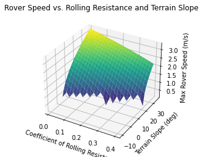
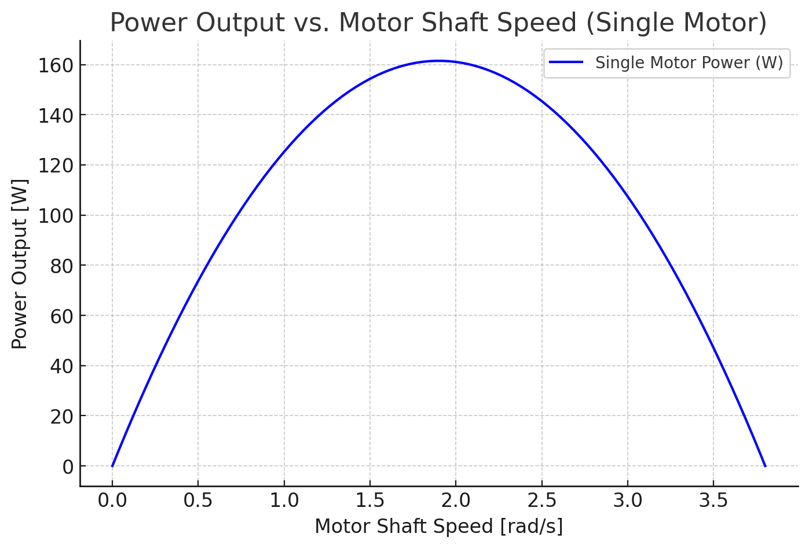
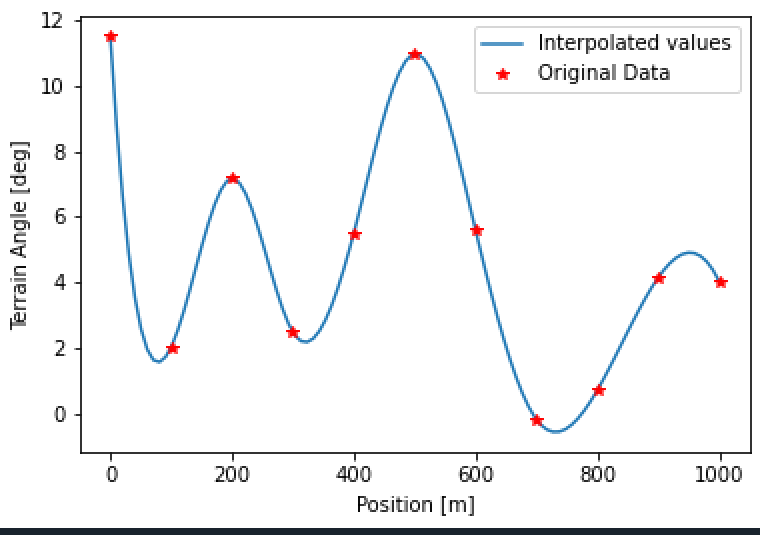
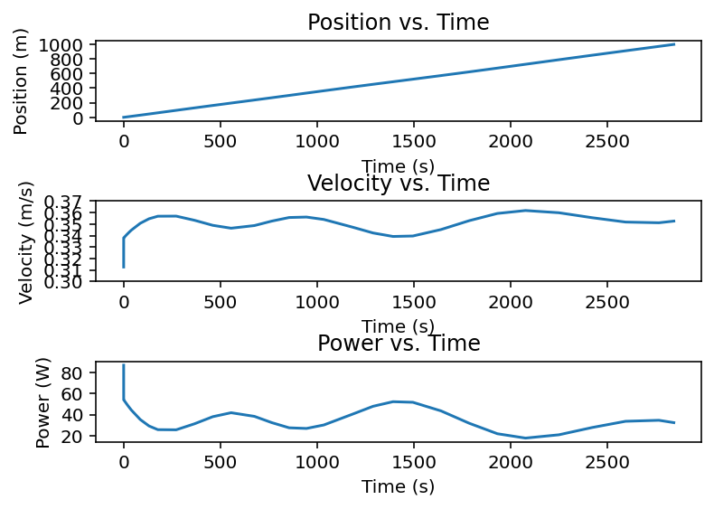
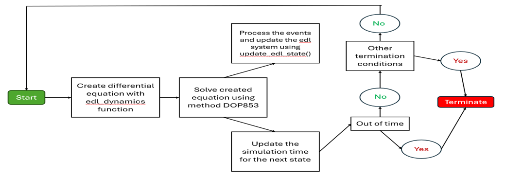
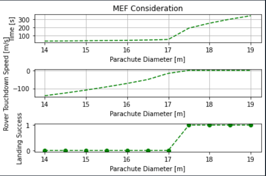

2025 · PYTHON · PROGRAMMING · SIMULATION
Mars Rover Landing Simulation
A Python simulation of a Mars rover mission, from the parachute descent and landing to driving across rough Martian terrain, built to make the rover handle any terrain while being as fast as possible.

Overview
This project was built in three phases. First we modeled the rover's drivetrain and how fast it can move. Then we simulated it driving over random Mars terrain. Finally we simulated the descent and landing, including the parachute, rockets, and sky crane that lower the rover to the surface. Our goal was to optimize the rover so it can handle any kind of terrain and be the fastest.
Phase 1: Rover Drivetrain Model
We wrote Python functions for the forces on the rover, which are gravity, rolling resistance, and the drive force from the motors through a speed reducer. From the DC motor model, a single motor reaches a maximum power of about 161.5 W at a shaft speed of 1.9 rad/s. We then studied how the rover's top speed changes with terrain slope and rolling resistance. The rover is fastest on flat ground with low resistance, and its top speed drops as either one increases.

Phase 2: Driving Over Mars Terrain
We used cubic interpolation to turn measured terrain data into a smooth terrain-angle profile, and interpolated motor efficiency against torque. An ODE solver then drove the rover across 1,000 m of this terrain while tracking its position, speed, power, and battery energy.


The rover covered the 1,000 m in about 2,843 s, with a top speed of 0.36 m/s and an average of 0.34 m/s. It needed about 998 kJ of battery energy, which is more than the 907 kJ the lithium iron phosphate pack holds. This showed that the design would not complete the mission without changes.
Phase 3: Descent and Landing
We built the entry, descent, and landing (EDL) simulation. It starts at 11 km altitude, moving at 590 m/s, and steps through each mission event: heat shield ejection, parachute ejection, rocket firing with PID speed and altitude control, and the sky crane lowering the rover. The equations of motion were solved with the DOP853 method.

We then ran a study on parachute size. With our updated drag model, parachute diameters of about 17.5 to 18.5 m landed the rover safely while keeping the descent time short, between about 200 and 300 seconds.
